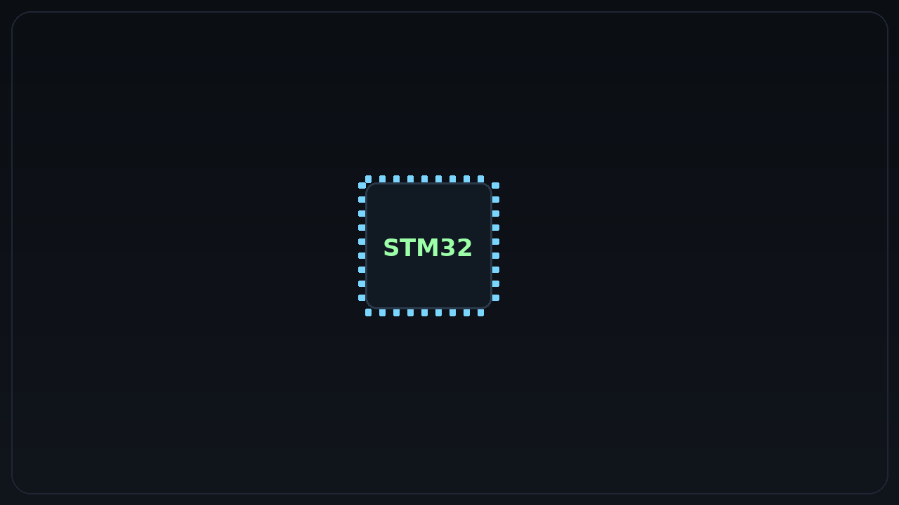

STM32 Microcontroller Mastery
Course Overview
An intensive hands-on course covering STM32 microcontroller development from fundamentals to advanced applications. Students learn to build real-world embedded systems with industry-standard tools and practices.
What You'll Learn
- STM32 architecture and peripheral management
- Real-time operating systems (FreeRTOS)
- Communication protocols (UART, SPI, I2C, CAN)
- ADC/DAC operations and sensor interfacing
- Power management and low-power modes
- Debugging techniques and performance optimization
- PCB design considerations for STM32 projects
- Firmware security and OTA updates
Course Structure
Module 1: Foundation
STM32 ecosystem, development tools, and basic programming concepts
Module 2: Peripherals
GPIO, timers, interrupts, and peripheral configuration
Module 3: Communication
Serial communication protocols and network connectivity
Module 4: Advanced Topics
RTOS, power management, and real-world project development
Prerequisites
- Basic knowledge of C programming
- Understanding of digital electronics fundamentals
- Familiarity with basic circuit analysis
Target Audience
Electronics engineers, embedded systems developers, IoT enthusiasts, and students looking to master STM32 microcontroller development for professional applications.
Learning Outcomes
Upon completion, students will be able to:
- Design and implement STM32-based embedded systems
- Develop efficient firmware using industry best practices
- Integrate various sensors and communication modules
- Optimize power consumption for battery-powered applications
- Debug and troubleshoot embedded systems effectively
- Apply real-time operating system concepts in practical projects